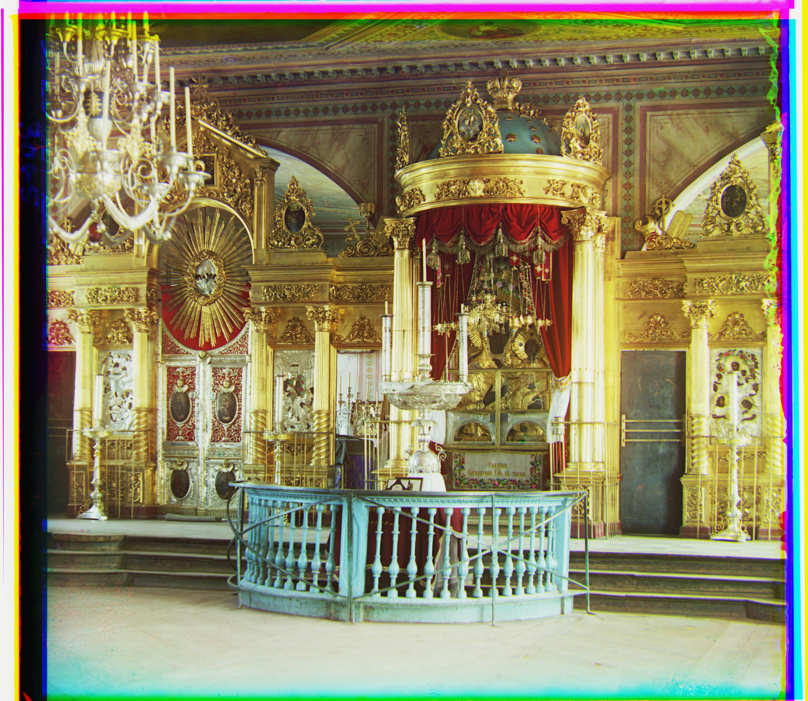
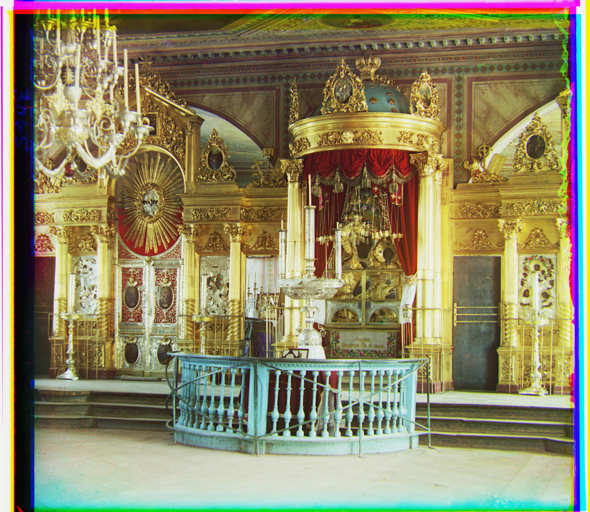

180 Project 1
A long long time ago, some good man took a bunch of photos. However, he insisted in making our lives hard, and so instead of using a color camera, he decided to take three photos every time, one of the red light, then green and finally blue.
Our job now is to deal with this and coalesce the three channels into color.
My approach: Do pyramid image search with the scale doubling every time, and then finding the best offset for the channel using simple NCC. The innovation was the crop the edges before doing NCC so that they don't matter.
Here's all the pictures he took (14 required, 4 that I found) with the coalesced versions to the right:

 | Offsets green(2, 5) red(3, 12)
| Offsets green(2, 5) red(3, 12)
 | Offsets green(2, 55) red(-5, 58)
| Offsets green(2, 55) red(-5, 58)
 | Offsets green(24, 49) red(43, 102)
| Offsets green(24, 49) red(43, 102)
 | Offsets green(16, 60) red(14, 124)
| Offsets green(16, 60) red(14, 124)  | Offsets green(17, 40) red(23, 89)
 | Offsets green(17, 40) red(23, 89)
 | Offsets green(8, 56) red(12, 109)
| Offsets green(8, 56) red(12, 109) | Offsets green(9, 82) red(12, 179)
| Offsets green(9, 82) red(12, 179)
 | Offsets green(2, -3) red(2, 3)
| Offsets green(2, -3) red(2, 3)
 | Offsets green(26, 51) red(36, 108)
| Offsets green(26, 51) red(36, 108)
 | Offsets green(-11, 33) red(-26, 140)
| Offsets green(-11, 33) red(-26, 140)
 | Offsets green(29, 79) red(34, 176)
| Offsets green(29, 79) red(34, 176) | Offsets green(13, 53) red(10, 112)
| Offsets green(13, 53) red(10, 112)
 | Offsets green(2, 3) red(3, 6)
| Offsets green(2, 3) red(3, 6)
 | Offsets green(6, 42) red(32, 87)
| Offsets green(6, 42) red(32, 87)
 | Offsets green(3, 4) red(5, 5)
| Offsets green(3, 4) red(5, 5) | Offsets green(3, 7) red(4, 15)
| Offsets green(3, 7) red(4, 15) | Offsets green(1, 1) red(2, 5)
| Offsets green(1, 1) red(2, 5)
 | Offsets green(3, 3) red(5, 8)
| Offsets green(3, 3) red(5, 8)